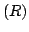
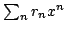
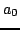
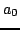
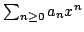
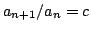
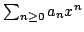
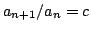

As for matrices, the type of the coefficients of polynomials
or series does not need to be a Ring, it can be an
ArithmeticType instead.
This allows types that do not have a full equality such
as SingleFloat to be used as coefficients, but
some polynomial functionalities are only available when
the coefficient type is a Ring or something stronger.
The polynomial and series types take a Symbol as
second argument. That symbol is used only for output when
converting the polynomial or series to an ExpressionTree,
so it is not necessary to give one when you use polynomials
or series inside a calculation. If you insist on naming the
variable, use - with any string as argument
to create a symbol. For example,
DenseUnivariatePolynomial(Integer) and
SparseUnivariatePolynomial(Fraction Integer, -"x")
are both valid polynomial types.
Whether you give a name for a variable or not, you
can override that choice using apply
with a Symbol or ExpressionTree as argument.
For example, if  is a polynomial or series,
stdout(p, -"z") writes
is a polynomial or series,
stdout(p, -"z") writes  to stdout
using ``z'' as variable name, and p(extree leaf(-"y"))
returns the ExpressionTree corresponding to
to stdout
using ``z'' as variable name, and p(extree leaf(-"y"))
returns the ExpressionTree corresponding to  with
``y'' as variable name.
with
``y'' as variable name.
To write generic code for manipulating polynomials or series use a type parameter usually of category UnivariatePolynomialCategory or UnivariateTaylorSeriesCategory respectively. Because polynomials, skew-polynomials and series share many common operations, Algebra provides in fact a complete category hierarchy for them, shown in Figure 2.
Those categories make it possible to write functions that work for polynomials, skew-polynomials, series or any combination of them. UnivariatePolynomialCategory is the category for types whose elements are usual polynomials of the form  with finite support. While
The elements of DenseUnivariateTaylorSeries are lazy series
represented by their coefficient sequences, themselves of type
Sequence. Those coefficient sequences are in turn represented
as Stream from libaldor. Therefore, the usual way to write a
function producing a series is to produce first its coefficient stream  ,
then call sequence on
,
then call sequence on  to produce the
coefficient sequence, and finally call
series on the coefficient sequence
to produce the series. Since streams are lazy, constructing a series
does not compute any of its coefficients until they are
specifically requested by another operation. There are several ways
to create streams, all documented in the libaldor reference manual,
and you should become familiar with them before programming with series.
For example, the following function takes constants
 and
to produce the
coefficient sequence, and finally call
series on the coefficient sequence
to produce the series. Since streams are lazy, constructing a series
does not compute any of its coefficients until they are
specifically requested by another operation. There are several ways
to create streams, all documented in the libaldor reference manual,
and you should become familiar with them before programming with series.
For example, the following function takes constants
 and  and produces the hypergeometric series
 where
.
and produces the hypergeometric series
 where
.
SeriesSample(R:CommutativeRing, Rx:UnivariateTaylorSeriesCategory R): with {
hypergeometricSeries: (R, R) -> Rx;
} == add {
hypergeometricSeries(a0:R, c:R):Rx == {
import from Sequence F;
zero? a0 => 0;
-- the following creates the stream [a0, c a0, c^2 a0, ... ]
coeffs:Stream R := orbit(a0, (x:R):R +-> c * x);
series sequence coeffs;
}
}
Finally, the type UnivariateTaylorSeriesCategory2Poly provides
conversions between univariate polynomials and series.